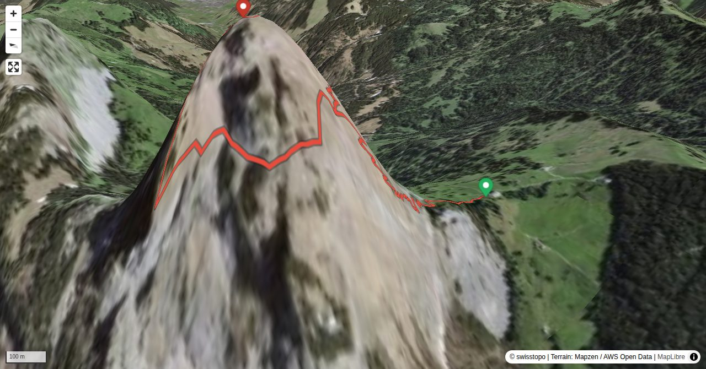

Gross Mythen, this mighty spire above Schwyz, is a landmark of Central Switzerland. Consequently, it is a very popular target for hikers. Most of them ascend it on the fairly easy normal route. Moreover, the cabin on the summit draws the crowds to the mountain. However, there are also more quiet itineraries to the top. One of the most rewarding is the route via Schafweg, Mythenmatt and Rot Grätli: entertaining, pleasurable, very sunny with great views – and wonderfully deserted.
If you start at the Rotenfluebahn summit station, add 25 minutes (way up) and 35 minutes (way back).
Quick Facts
| Summit elevation | 1872 m |
|---|---|
| Difficulty | SAC T5 Demanding alpine hiking with exposure, scrambling, and route-finding. Guide |
| Trailhead | Holzegg, summit station |
| Distance | 2.7 km (out-and-back) |
| Total ascent | ~468 m |
| Elevation range | 1402-1871 m |
| Route sources | SAC Route Portal |
Photos


Route Map & Elevation
i
i
sac_scale (precise T1–T6) with
swissTLM3D Wanderwegart
fallback where OSM is silent (coarser T2/T3 and T4+ buckets).
Coverage: OSM 99.0% · swisstopo 0.0% · unknown 0.0%.Elevations computed from the inlined GPX track (SwissTopo height API).
Loading forecast…
3D Terrain View

Route Details
Schafweg, Mythenmatt and Rot Grätli
- If you start at the Rotenfluebahn summit station, add 25 minutes (way up) and 35 minutes (way back). If you start at Brunni (Holzeggbahn bottom station), add 55 minutes (way up) and 35 minutes (way back).
Terrain & safety
The crux is the last stretch of the tour, Rot Grätli, where scrambling skills are required. Several bolts make sure that protecting with a rope is possible. The steep grassy face after leaving the normal route at bend 22 is around T4+. The same degree is for the exposed passages after this grassy face, which are equipped with fixed ropes, and the traversing of the steep ditch of a creek before Mythenmatt. The short tour is ideal for introducing beginners to the art of alpine hiking.
Source: SAC Route Portal
Getting There & Back
Start: Holzegg, summit station (1402 m)
Directions from to Holzegg, summit station
Route returns to Holzegg, summit station.
Field Reference
| Trailhead | Holzegg, summit station | 47.02880, 8.69810 |
|---|---|---|
| Summit | Gross Mythen (1872 m) | 47.02992, 8.68877 |
Coordinates are WGS84 decimal degrees (lat, lon). Emergency: 112 (general) or 1414 (Rega air rescue). Page URL: